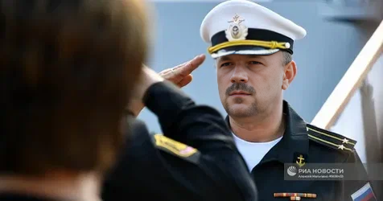

Пошаговый видеокурс по лечебному голоданию от 4 до 7 дней. Без вебинаров, без тестов, без воды — только рабочая инструкция от врача.
▶ Видео о методе — 25 минут, которые изменят ваш подход к здоровью
Под каждым видео о лечебном голодании — миллион вопросов. А что пить? А как не сорваться? А если семья готовит? Ответов нет.
Ни подготовки, ни плана, ни понимания процессов. Итог — срыв на второй день и разочарование.
Нет мотивации, нет психологической подготовки. Голова сдаётся раньше тела — и человек бросает.
А что такое содовая вода? А как ходить на работу? А что делать, если в семье готовят? Без ответов — без результата.
Недельное голодание раз в месяц — полноценная перезагрузка организма
«Дисциплина — это свобода от лишнего»
— В.Ю. Александров«Для меня голодание — не модный тренд, а рабочий инструмент. Почти панацея.»
— из 10-летнего опыта🔖 Не перекладывайте ответственность за свою жизнь на других — это короткая дорога к стагнации.
🟢 Развитие начинается там, где вы честно говорите: «Это моя жизнь и мои решения».
🔊 Примите контроль — и у вас появится свобода менять что угодно.
Личные результаты автора и людей, прошедших метод
Была бронхиальная астма — полностью ушла
Сопли, слёзы каждую весну — всё, тишина
Гастрит поздней стадии — стал историей
Воспаления ушли, каждый день играю в волейбол
Давление нормализуется, уходит зависимость от таблеток
Высыпания уходят, кожа очищается изнутри
Усиление терморегуляции, повышенная выносливость, бодрость с утра
Мозг работает чётче, ощущение «я проснулся»
Выработка гормона роста, обновление метаболизма, обновление 95% эритроцитов крови
Минус 2,5 года биологического возраста за один курс голодания
Уходит вес, отёки, тяга к перекусам
Аутофагия — организм сжигает битые клетки, мусор, повреждённые ткани

Занимаюсь лечебным голоданием более 10 лет. Начинал с классиков — Николаев, Кокосов, Брэгг, Шелтон. Всё перечитал, переложил через себя, а дальше началась практика.
Сначала голодал сам, экспериментировал. Потом друзья и сослуживцы начали спрашивать: «Почему ты так молодо выглядишь? Почему не ходишь с аптечкой?» Так всё переросло в мини-клинику.
Через мои руки прошли десятки, если не сотни человек. На себе вычистил: астму, аллергию, геморрой, гастрит, артрит. Сейчас играю в волейбол каждый день как пацан.
Одно видео. Полная инструкция. Ничего лишнего.
Что купить заранее, как подготовить тело и голову. Психологический настрой и мотивация — чтобы не сойти с дистанции.
Чёткая пошаговая инструкция: что делать, в какой последовательности, как подготовить организм к голоданию.
Что делать каждый день. Психологические и физиологические лайфхаки. Как противостоять чувству голода без надрыва и истерик.
Чёткая инструкция, как заменить наш «виртуальный орган» — микробиом. Это основная часть всего процесса голодания.
По моему методу ограничений по выбору еды нет. Есть ограничения по калориям — и то не критично. Пошаговый план на 3 дня после голода.
Никаких вебинаров. Никаких тестов. Никаких домашних заданий.
Просто видеокурс — смотрите, делаете, получаете результат.
Полный справочник по лечебному голоданию — от истории до практики
Практика лечебного голодания уходит в глубокую древность. Древнегреческие философы Пифагор, Сократ и Платон голодали, понимая, что эта практика обеспечивает крепкое здоровье и ясность ума. Знаменитые врачи Гиппократ и Авиценна использовали голодание в своём терапевтическом инструментарии.
Однако современный подход к лечебному голоданию как систематическому медицинскому вмешательству начал формироваться только в XX веке.
🔑 Ключевой вывод: все методологии сходятся в одном — голодание от 4 до 7 дней является оптимальным окном для достижения результатов при минимальных рисках.
Методика делит курс на две равные части: фазу голодания и фазу восстановления. Для 7-дневного голодания: 7 дней голодания + 7 дней восстановления = 14 дней.
💡 Ключевой принцип Николаева: период восстановления должен быть равен периоду голодания.
💡 Инновация Брэгга: регулярное умеренное голодание как профилактика, а не только лечение существующих проблем.
💡 Принцип Шелтона: энергия, расходуемая на пищеварение, при голодании полностью перенаправляется на исцеление.
💡 Иванов: очищение тела без морального очищения даёт неполные и неустойчивые результаты.
💡 Ключевой вклад: голодание — это не временное ограничение, а начало более здорового образа жизни. Практикующие естественным образом начинают предпочитать натуральные продукты.
Диапазон 4–7 дней — критическая метаболическая точка, в которой максимальны трансформационные изменения при минимальных рисках.
⚠️ Голодание более 7 дней требует профессионального медицинского наблюдения. Дома безопасен только диапазон 4-7 дней.
💡 Консенсус клиник: 3 дня подготовки + 7 дней голодания + 3-4 дня восстановления = 13-14 дней — это основан на накопленных клинических доказательствах.
Понимание изменений каждого дня помогает воспринимать происходящее как нормальный физиологический процесс.
Успешное голодание начинается не с отказа от еды, а с сознательной подготовки организма и ума.
💡 Ночь перед голоданием: ранний сон (21:00-22:00), медитация перед сном.
💡 Кризис разрешается ночью 3-го или утром 4-го дня. После — резкое облегчение!
⚠️ Дни 8+ требуют обязательной консультации с врачом!
💡 Люди с комплексной поддержкой переносят 7 дней так же комфортно, как другие переносят 5-6 дней без процедур.
💡 Главный принцип: введение питательных веществ без перегрузки пищеварительной системы.
⚠️ Аппетит в день 1 может быть очень интенсивным — это психологический отскок. Многие срываются именно здесь. Соблюдай протокол!
Постепенный переход к полноценному питанию без мяса и рыбы.
💡 Люди, соблюдающие молочно-растительную диету после голодания, сообщают о стабильном снижении веса без возврата и улучшении хронических заболеваний.
💡 Напишите письменный график приёма пищи и строго следуйте ему.
✨ Люди, соблюдающие эти принципы, сообщают о стабильном снижении веса и качественных изменениях в пищевых предпочтениях.
💡 Бессонница во время голодания — часть процесса адаптации и обычно не требует лечения.
🆘 Немедленно прекратить голодание при: боли в груди, сильных обмороках, нарушении сознания, неритмичном пульсе, стойкой сильной рвоте.
✅ При соблюдении правильной подготовки и выхода — 4-7-дневное голодание безопасно для широкого круга людей.
🗓️ ПОЛНЫЙ ЛЕЧЕБНЫЙ КУРС: 7 дней подготовки + 7 дней голодания + 30 дней восстановления
🚨 Немедленно к врачу: боль в груди, обмороки, нарушение сознания, неритмичный пульс.
Лечебное голодание продолжительностью 4-7 дней — одно из наиболее мощных и доступных вмешательств для изменения здоровья. Синтезируя классические методологии Николаева, Брэгга, Шелтона, Иванова и Суворина с современным пониманием физиологии, этот протокол обеспечивает безопасный и воспроизводимый путь к значительным улучшениям здоровья.
✨ Организм, получивший возможность сосредоточиться на исцелении вместо пищеварения, показывает удивительную способность восстанавливаться. Подготовьтесь полностью — и позвольте себе стать тем человеком, которым вы стремитесь быть.
Библиотека бесплатна. Если было полезно — угостите автора кофе ☕
☕ Поддержать автораОдна цена — полный метод
Оплата через безопасный платёжный шлюз ЮМани
Данный видеокурс носит исключительно информационно-образовательный характер и не является медицинской рекомендацией, назначением или заменой консультации врача.
Многодневное голодание имеет противопоказания: сердечно-сосудистые заболевания, гипертония, сахарный диабет, тяжёлые хронические болезни, беременность, период лактации. Перед началом курса обязательно проконсультируйтесь с лечащим врачом.
Всё, что вы делаете на основании информации из курса, вы делаете добровольно, осознанно и на свой страх и риск. Автор не несёт ответственности за последствия самостоятельного применения описанных методик без наблюдения специалиста.